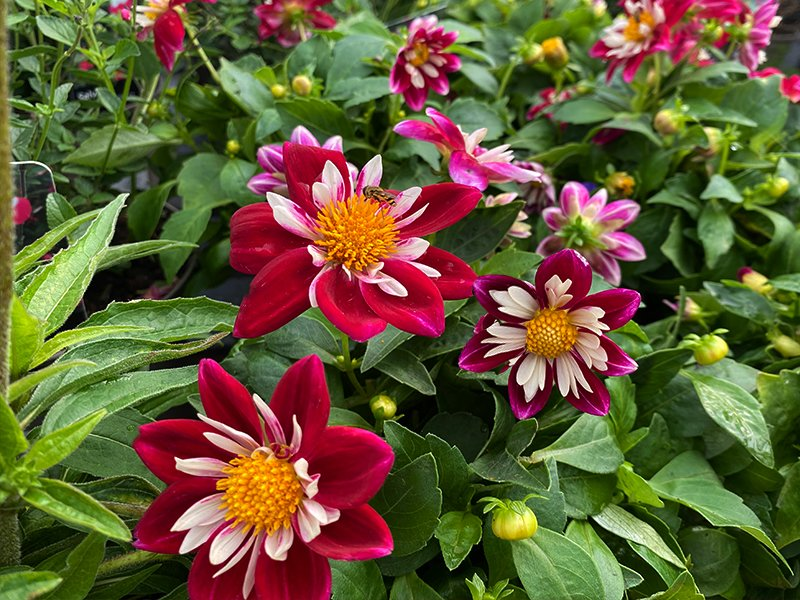
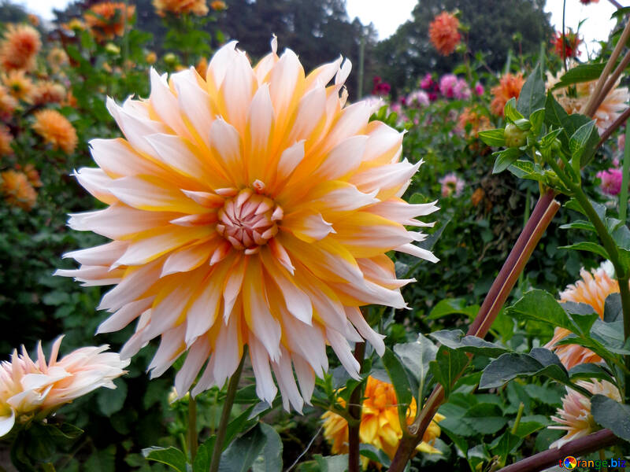
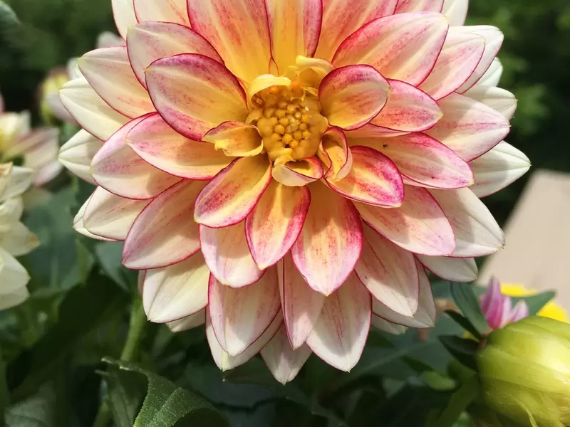
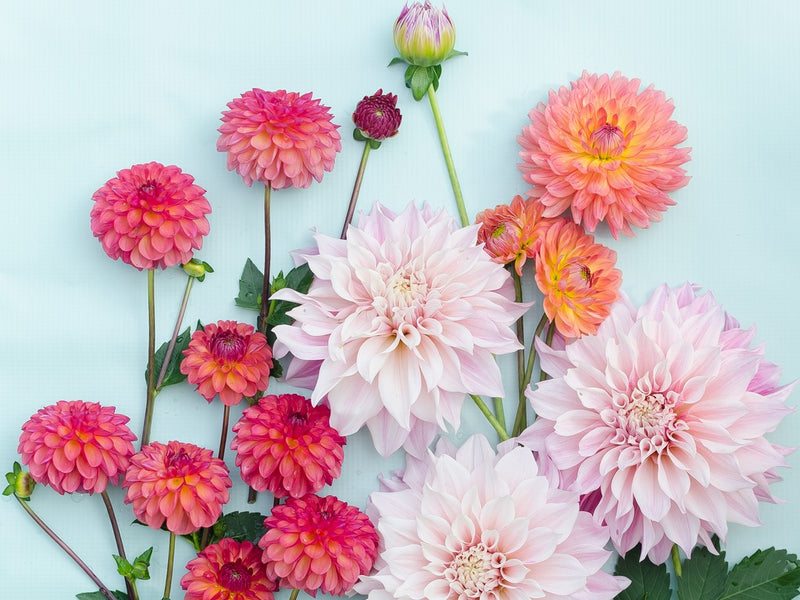

Meaning: Eternal love, Commitment
Symbolism
The dahlia flower is often called the “Queen of the Autumn Garden” because it blooms for an extended period of time, living well into the fall months. Frequently used in wedding bouquets during the Victorian era, the flower symbolized longevity and commitment.
Gallery



